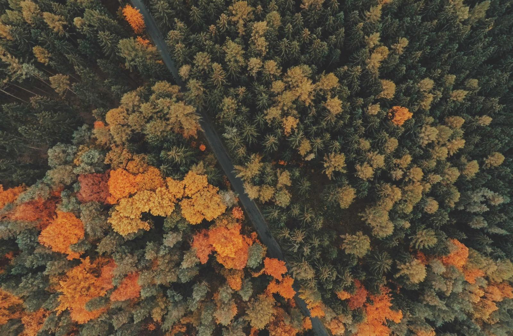

林梢留下的两种温度
从秋林的原色到钢蓝的树影，记录同一张照片的两种温度。
从上方看，针叶树的树梢像一支支细笔，旁边却挤着几团饱满的秋叶。看得久了，先认出来的是它们的形状，才是它们的颜色。
原色里的秋天

在这张照片里，最先吸引我的是几棵挨在一起的橙树。随后才看见树梢间狭长的空隙。一束光照到阔叶上，旁边的针叶就显得更细、更深。
把阴影调成钢蓝
傍晚的树林在我的印象里更冷一些。所以我给这张照片留了两种版本：一种保留原有的绿与金黄，另一种把阴影染成钢蓝。摄影里我最喜欢的，常常就是这点差别。
想比较两种温度，可以回到首页打开「整幅显色」，看同一棵树在浅色和深色模式里是什么样子。
封面摄影出自 Jakub Sejkora。